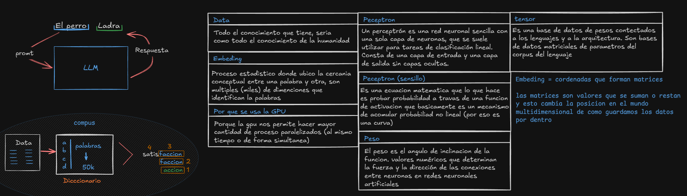
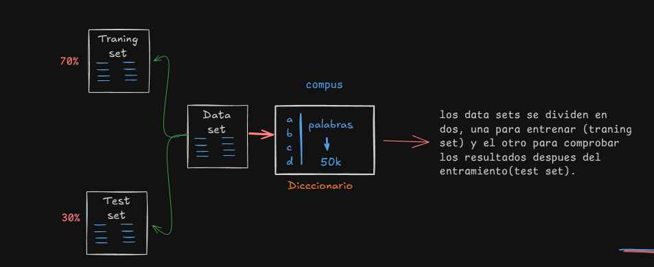
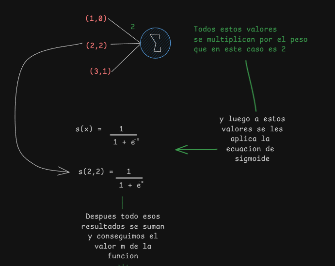
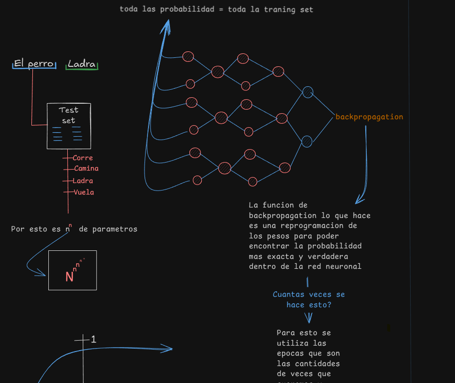
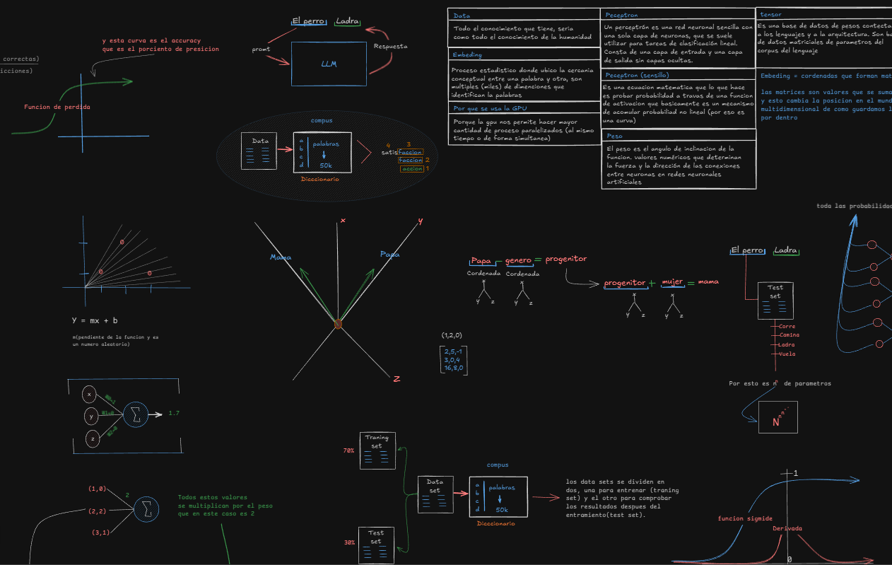

Una IA moderna se basa en redes neuronales artificiales que imitan, de forma simplificada, la forma en la que el cerebro humano procesa información (Luego hablaremos sobre los HRM). Un modelo de IA no “piensa”, sino que aprende patrones mediante análisis estadístico a partir de grandes conjuntos de datos.
Todo comienza definiendo un objetivo: por ejemplo, clasificar imágenes, generar textos coherentes o detectar sonidos como un ladrido. Ese objetivo determina qué tipo de modelo se utilizará y qué datos serán necesarios para entrenarlo y convertirlos en nuestro dataset.
Aquí orientaremos un ejemplo en torno a cómo podemos crear una IA que pueda predecir que los perros ladran.

El proceso arranca con la construcción de un dataset, que es un conjunto de ejemplos representativos de la tarea que se quiere resolver. Si el modelo debe aprender que los perros ladran, se reunirán frases, imágenes o información relacionada. Cuando estos datos se destinan al aprendizaje del modelo les llamamos training set, pero también tenemos otros ejemplos separados que forman el validation test y test set, los cuales sirven para evaluar qué tan bien generaliza la IA lo aprendido durante el proceso de entrenamiento.
Para este proceso es fundamental que los datos estén limpios, bien etiquetados y representen los distintos casos del mundo real para evitar sesgos o errores que después puedan convertirse en anomalías.

Una vez preparados los datos, pasa al preprocesamiento. En el caso del texto, este consiste en transformar las palabras en una forma numérica que el modelo pueda entender. Aquí entran en juego los embeddings(1), vectores numéricos que representan palabras o tokens en un espacio matemático multi vectorial donde conceptos similares se encuentran próximos entre sí. Por ejemplo, las palabras “perro”, “can” o “mascota” pueden quedar ubicadas cerca unas de otras, haciendo que la IA capte sus relaciones semánticas.
(1) Embeddings: Proceso estadístico donde ubico la cercanía conceptual entre una palabra y otra, son múltiples (miles) de dimensiones que identifican la palabras.
En este punto entra en escena la arquitectura del modelo, comenzando desde variantes simples como el perceptrón(2), una neurona artificial que recibe entradas, las multiplica por valores llamados pesos, suma los resultados y aplica una función matemática conocida como activación. Cuando se combinan miles o millones de perceptrones en capas, se obtienen lo que conocemos como redes neuronales profundas.
En modelos modernos como los LLM (Large Language Models), se usan arquitecturas mucho más avanzadas, principalmente los transformers, que emplean mecanismos de self-attention para analizar cómo las partes de una oración se relacionan entre sí, independientemente de su posición. Gracias a este concepto de atención, modelos como GPT pueden comprender frases complejas y generar respuestas que mantienen coherencia global.

Un perceptrón es una red neuronal sencilla con una sola capa de neuronas, que se suele utilizar para tareas de clasificación lineal. Consta de una capa de entrada y una capa de salida sin capas ocultas.
Durante el entrenamiento, el modelo pasa los datos por sus capas en un proceso llamado forward pass y realiza una predicción. Esa predicción se compara con la respuesta correcta mediante una función de pérdida (explicada en la imagen). A través del algoritmo conocido como backpropagation(3), el modelo calcula cómo deben ajustarse los pesos para reducir el error.
El proceso se repite miles o millones de veces, usando un optimizador como Adam o SGD, modificando progresivamente los pesos. Este es el momento donde todo se complica para las computadoras y donde más recursos de necesitan y es la razón por la que usamos las GPU, ya que esta nos permite realizar de forma paralela y simultánea todos estos procesos, permitiendo un procesamiento mucho más rápido (n^n) y costos más baratos.

La función de backpropagation lo que hace es una reprogramación de los pesos para poder encontrar la probabilidad más exacta y verdadera dentro de la red neuronal.
A medida que el modelo mejora, se evalúa con datos que no ha visto antes para medir su capacidad de generalización. Si aprende demasiado bien los datos de entrenamiento pero falla con ejemplos nuevos, se dice que sufre overfitting (aprende demasiado). Para combatir este riesgo se utilizan técnicas como dropout, regularización o ampliación artificial de datos (data augmentation). Luego de este proceso entra la etapa de inferencia que permite probar dicho modelo en tiempo real.
Ejemplo del perro:
Veamos ahora un ejemplo sencillo. Si quisiéramos crear una IA que entienda que “el perro ladra”, podríamos preparar un dataset con frases como “El perro ladra al cartero” o “Escuché a un perro ladrando”, junto a ejemplos negativos como “El perro duerme” o “El gato maúlla”.
Después, tokenizamos las oraciones, generamos embeddings para cada palabra y alimentamos esos vectores a una pequeña red neuronal. Durante el entrenamiento, el modelo aprenderá a asociar palabras como “perro”, “ladra”, “ladrido” o “ladrar” con la categoría correcta. Al final, cuando reciba una frase nueva como “Mi vecino tiene un perro que ladra mucho”, podrá identificar que se refiere a ese comportamiento.
